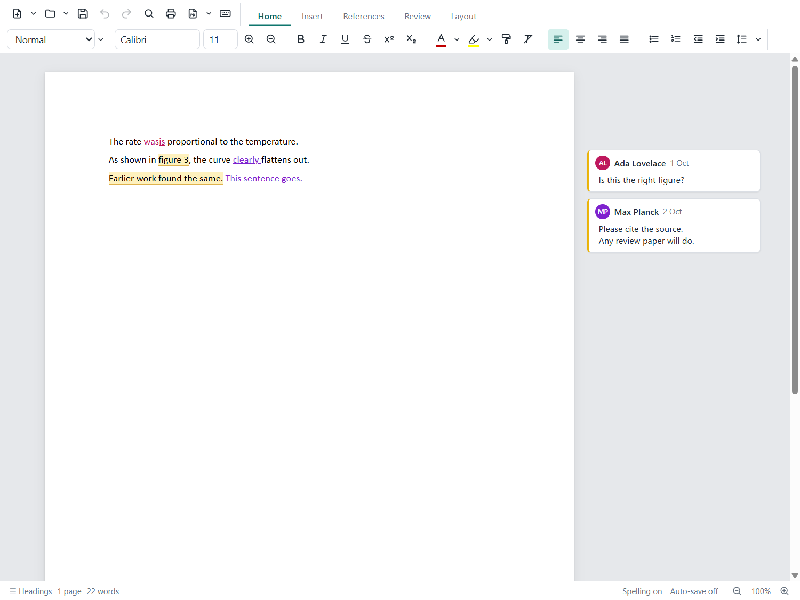
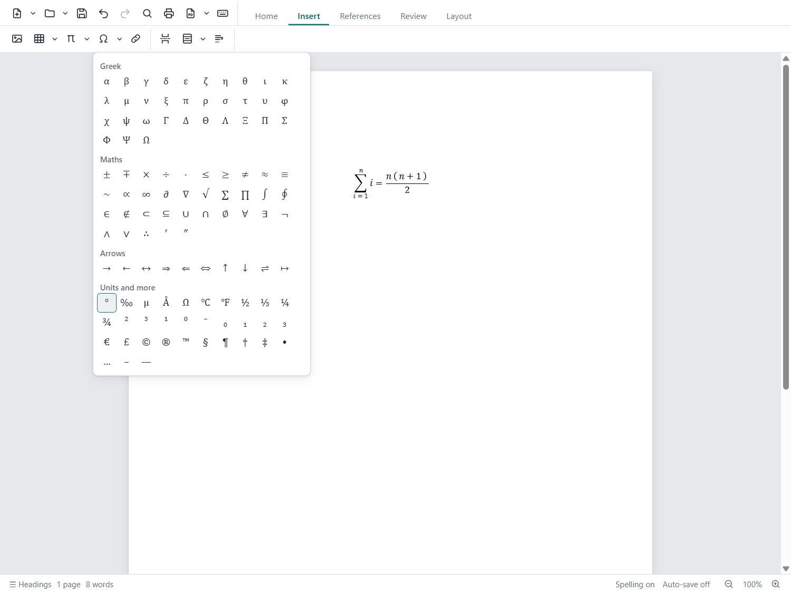

DuckWriter
A word processor that opens and saves Word documents (.docx) and keeps them Word documents. Made for scientific writing: equations, footnotes, captions and cross-references, citations and a reference list, tracked changes and comments.
Windows may say Windows protected your PC
, because the installers aren't code-signed (that costs money every year). Click More info, then Run anyway. After that the apps keep themselves up to date.


// what it does
Word files stay Word files
Opens and saves .docx, and older .doc, .rtf and .odt. What DuckWriter doesn't edit itself stays in the file unchanged.
Equations
Alt+= and type, LaTeX-style. They are saved as real Word equations.
Citations and references
Add sources, cite them, and get the reference list in APA, IEEE and other styles.
Footnotes, captions, cross-references
Numbered for you, and kept up to date as the document changes.
Review
Tracked changes and comments, read and written the way Word does them.
PDF to Word
Open a PDF and DuckWriter turns it into an editable document.
Spelling
Norwegian and English, side by side.
Auto-save
Nothing is lost if the computer shuts down: DuckWriter offers to bring the text back.
Copy pictures anywhere
A picture copied from DuckWriter pastes into Word, Paint, chats and back.
// keys
| Ctrl+S / Ctrl+Shift+S / F12 | Save / save as |
| Alt+= | Equation |
| Ctrl+B / I / U | Bold / italic / underline |
| Ctrl+F / Ctrl+H | Find / replace |
| Alt+scroll wheel | Bigger / smaller text |
| Ctrl+scroll wheel | Zoom |
| Alt+Shift+W | Write together |
// help
Something not working, or missing? Tell us on GitHub. DuckWriter is free and open source: see the code.